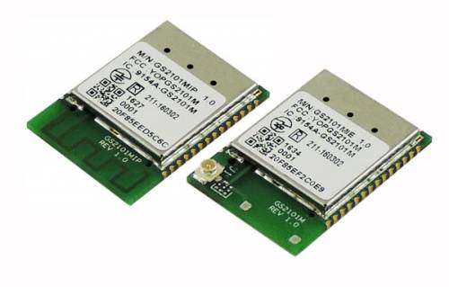
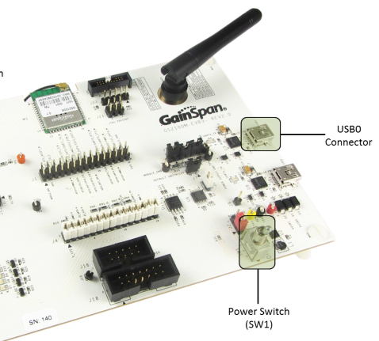
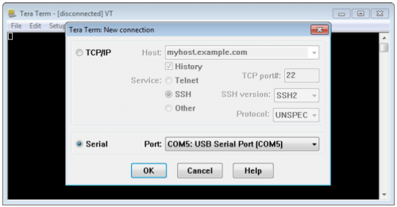
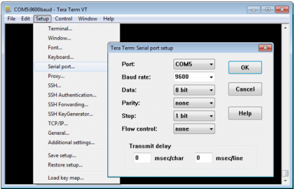
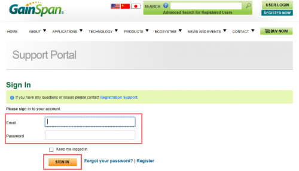
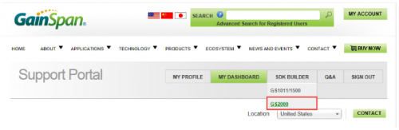
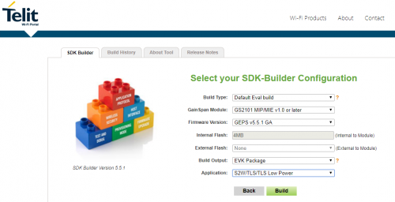
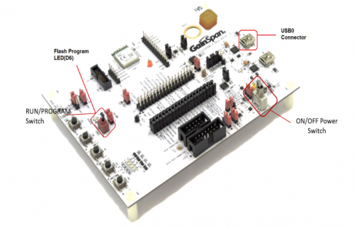
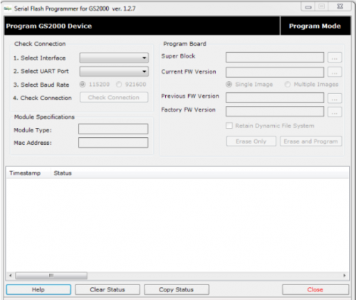
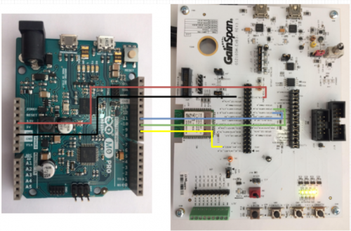

Wifi GS2101M

Aqui são disponibilizadas todas as informações necessárias para montagem, configuração, testes e utilização do módulo Telit GS2101M.
Sobre o Módulo GS2101M¶
A série GS2101M é um módulo Wi-Fi (IEEE 802.11 b / g / n) totalmente certificado e seguro que oferece integração rápida e econômica da conectividade Wi-Fi aos projetos de produtos. A série está disponível com uma antena de rastreio PCB opcional ou conector U.FL.
Características¶
- 3 ADCs sigma-delta de 16 bits, ideais para dispositivos inteligentes de medição e energia
- 18 x 25 x 2,7 mm 40 pinos
- Medição de alta resolução e medição de energia
- Modo sem host (sem MCU externo), executando Wi-Fi completo e pilha de rede TCP/IP
- Modo host, a biblioteca de comandos AT mais abrangente conectando-se a qualquer microcontrolador host de 8/16/32 bits usando interfaces UART, SPI ou SDIO
- Fácil provisionamento de smartphones com AP limitado ou Wi-Fi Protected Set-up (WPS)
- Baixo consumo com recursos de gerenciamento de energia: 2,7V - 3,6V, 3,3V nominal
Referências¶
- Página do Módulo
- Telit GS2101M Datasheet
- Telit GS2101M AT Commands
- Serial to Wifi User Guide
- IP to Wifi User Guide
Sobre o Kit de Desenvolvimento GainSpan GS2100M EVB3¶

Kit de Desenvolvimento oficial do módulo GS2101M.
Referências¶
- GS2K Module Evaluation Board Hardware User Guide
- GS2K Module Programing User Guide
- GS2K S2W User Case Reference Guide
Configuração do Ambiente de Hardware¶
Os procedimentos de setup inicial contidos no documento: GS2K Module Evaluation Board Hardware User Guide serão listados a seguir:
1 - Conectar a placa EVB3 através de seu conector microUSB (USB0) na porta USB do computador (a alimentação da placa ocorre pela USB do computador).

2 - Instalar o drive FTDI.
3 - Instalar o software serial TeraTerm VT termial.
4 - Executar o TeraTerm e configurar a porta serial como nas imagens abaixo:


Obs. 1: Os primeiros testes realizados com o kit EVB3 só funcionaram com o baudrate 460800 para a versão 3.5.0 do firmware de avaliação (AT+VER=?? -> comando que retorna a versão de firmware instalado na placa).
Obs. 2: O envio de comandos AT também podem ser realizados através do software AT Controller disponível na área de downloads no site da Telit.
Atualização de Firmware¶
O procedimento de atualização de firmware foi realizado seguindo a documentação técnica: GS2K Module Programming User Guide.
1 - Acessar o site http://www.gainspan.com.br e realizar o cadastro para ter acesso a portal de suporte.

2 - Clique em SDK Buikder e selecione o módulo GS2000 como indicado na figura abaixo.

Obs. 1: Clique em next na próxima tela.
3 - Na tela apresentada abaixo, foi selecionada opção para criação do firmware de avaliação da EVB3.

Obs: 1: Após clicar em next nesta tela, uma versão do firmware, com as configurações selecionadas, será criada. Em seguida ao clicar na aba Build History, o projeto do firmware, com a ferramenta de atualização e documentações, estará disponível para download em alguns minutos.
4 - Configure a placa para o modo de program na chave (vermelha), conecte a placa pela usb0 no computador e ligue a chave de alimentação da placa como indicado na imagem abaixo.

5 - Na pasta Tools está disponível a ferramenta de atualização de firmware GS_programming_tool.

Obs. 1: Selecione os parâmetros de conexão e clique em check connection para verificar se existe comunicação com a placa. Caso o software não consiga se comunicar com a placa basta selecionar o baudrate adequado, com o jumper J13 presente o baudrate é igua a 921600 e sem o jumper o baudrate é 115200.
Obs. 2: Em seguida, nas opções Super Block e Current FW Version, selecione os dois arquivos binários de atualização dentro da pasta Embedded\s2w e clique em Erase and Program.
Integração com Arduino M0 Pro¶
A Conexão da EVB3 com o arduino deve ser de acordo com a seguinte imagem:
| Pino Arduino M0 Pro | Pino EVB3 |
|---|---|
| GND | GND |
| 3.3V | VIN_3V3 |
| 10 | GPIO0/UART0_RX_M |
| 11 | GPIO1/UART0_TX_M |
| 09 | EXT_RTC_RESET_N |
